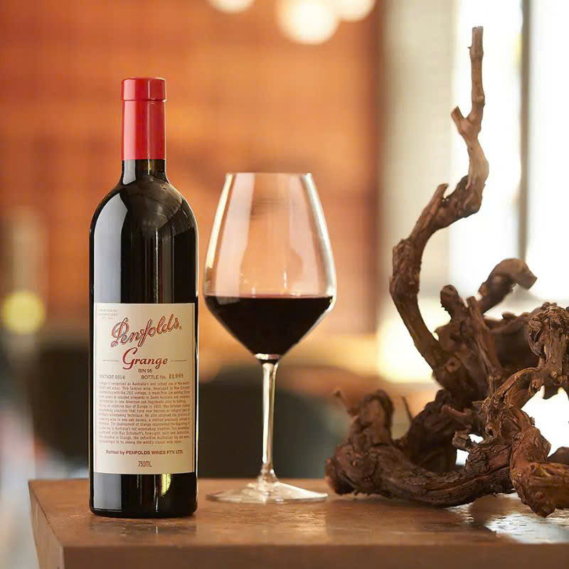

National Trust Heritage
Đỉnh Cao Vang Đỏ Nam Úc
Biểu Tượng Mãnh Liệt Thay Đổi Bản Đồ Vang Thế Giới
Penfolds Grange Bin 95
22.000.000 đ
Sắc Thế Huyền Bí (Visual Spectrum)
Sắc Cốt Tử Hắc
Màu đỏ đen đậm đặc cốt lõi, sâu thẳm và đầy quyền lực tựa như một màn đêm huyền bí.
Ánh Viền Mận Sẫm
Ánh viền tím mận sẫm cuốn hút bộc lộ sức mạnh tannin cô đặc bùng nổ vượt thời gian.
Tuyệt Tác Phối Trộn Đa Vùng
Sự kết hợp hoàn hảo giữa những gốc nho Shiraz cổ thụ xuất sắc nhất vùng Barossa Valley và McLaren Vale. Hương thơm bừng tỉnh của quả mâm xôi đen, chocolate đen, cam thảo quyện chặt vào làn hương gỗ sồi Mỹ thượng hạng. Một cấu trúc vĩ đại, tannin chặt chẽ và hậu vị ngạo nghễ kéo dài hàng thập kỷ.
* Toàn bộ các niên vụ của Penfolds Grange đều đủ điều kiện tham gia đặc quyền "Re-corking Clinic" – quy trình kiểm tra và thay nút bần chính hãng từ các chuyên gia Penfolds toàn cầu.